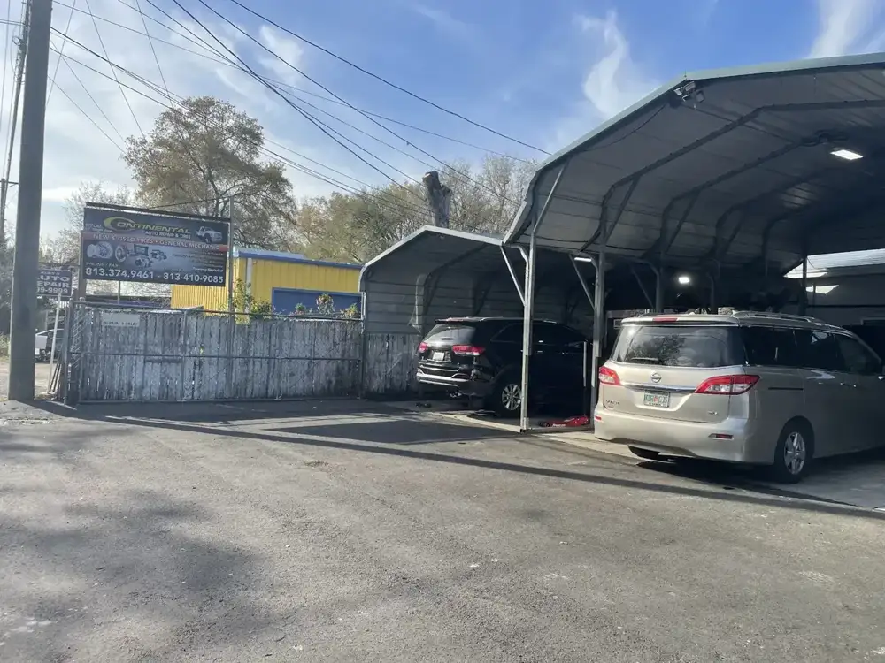
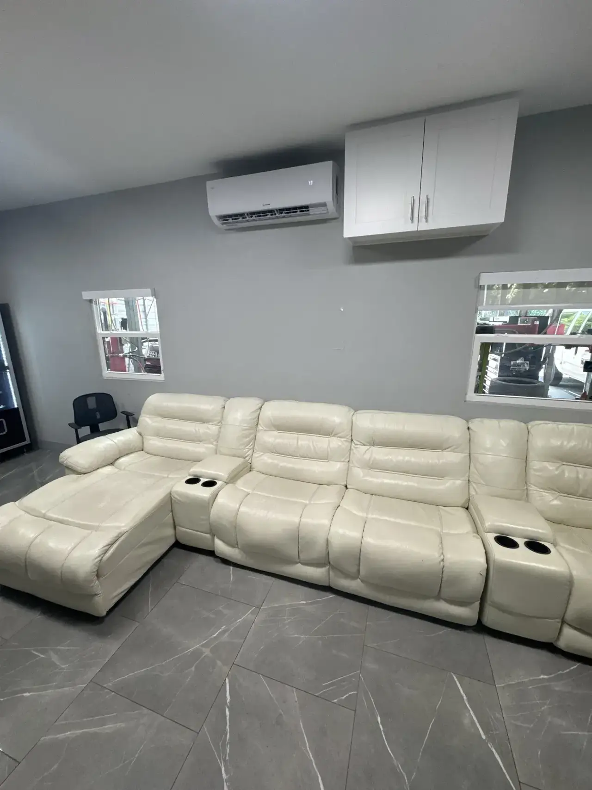
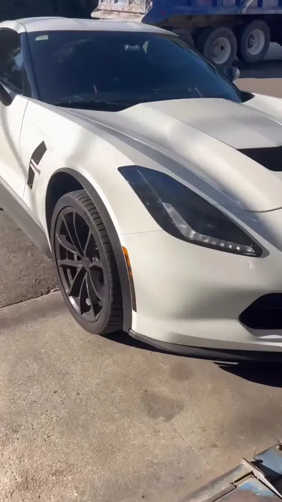
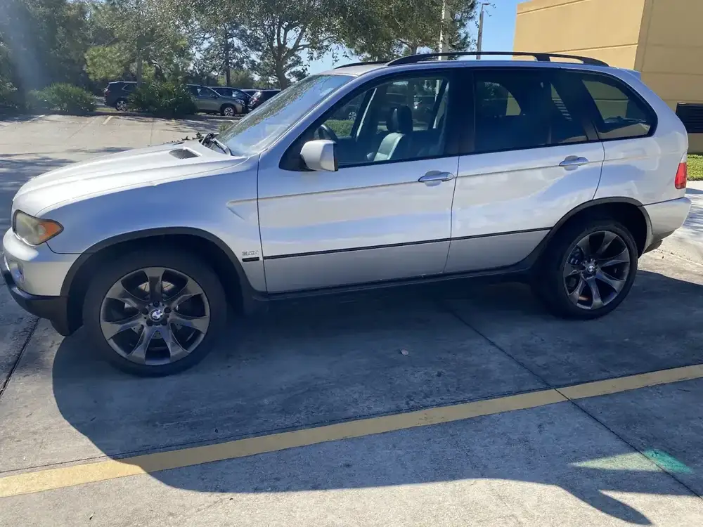
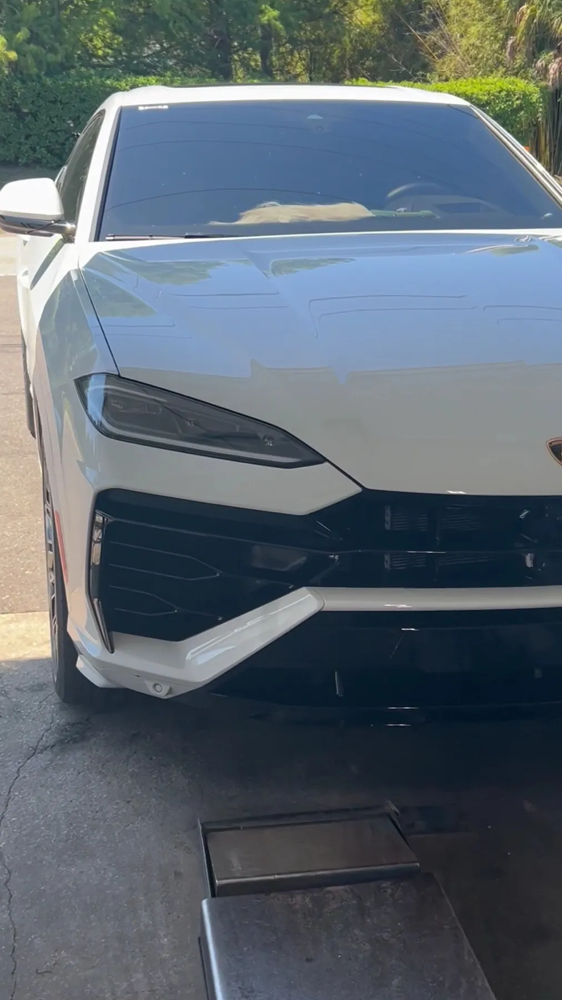
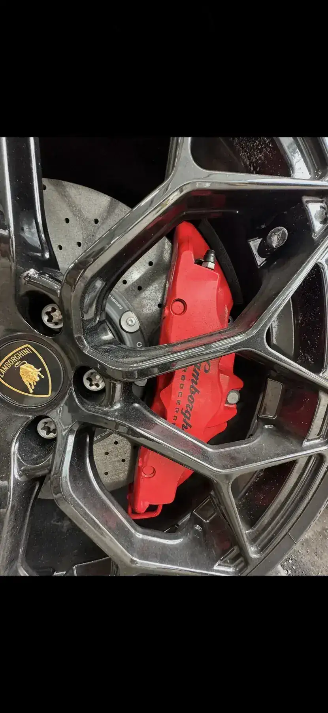

Tires
A patch on one or four new ones. The shop sign says new and used tires.
- Tire patches
- Tire replacement
- Mounting and balancing
Auto & tire repair · Sligh Ave, Tampa
Jordy and his crew patch a tire or put on all four, keep the price fair and have you out the door fast, with music playing and a shop dog to say hi.

Family owned
What we do
New and used tires, tire patches and general repair on W Sligh Ave.
A patch on one or four new ones. The shop sign says new and used tires.
General repair work done in the covered bays by the crew.
Sit inside in the seating area or wait outside, music on and the shop dog nearby.

Who we are
Continental Auto & Tire Repair is a family-owned shop on West Sligh Avenue in Tampa. Customers call the husband and wife who run it the greatest people in the business.
Reviewers talk about the mechanics being nice and easygoing, a seating area inside or a spot to wait outside, music going all day and a friendly shop dog who might give you some love.
Around the shop





Postcards from customers
4.6 of 5 from 247 Google reviews
Post card✦ I’ve been coming here for years. They are always affordable, efficient and friendly. Whether I need a tire patch or all 4 replaced, I’m coming to Jordy and his guys at Continental.
Post card✦ Continental is my favorite place for anything tire related. They are fast, friendly, & offer competitive pricing. At Continental you're not just a customer, you're family. Excellent customer service is what sets these guys apart from the rest! Thanks for all you do! My loyalty lies with Continental!!
Post card✦ I got four new tires for a great price, and was in and out in a half hour. Extremely friendly customer service and an adorable dog!
Post card✦ Been coming to this spot for a minute now, the mechanics are really nice and cool people and they’ll get you up and running in no time. They have a nice seating area inside or you can also wait outside, there’s music playing all the time and if you’re lucky you’ll get some love from the dog they have there.
Call or stop by
5709 W Sligh Ave, Tampa, FL 33634 Directions
Pull in under the carports. Wait inside in the seating area or outside with the music.